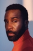

![link to Homem-Aranha: Um Novo Dia [Autorado] on Rotten Tomatoes](../img/tomatoes.png)
![link to Homem-Aranha: Um Novo Dia [Autorado] on TheMovieDb](../img/themoviedb.png)
Outro Título:Spider-Man: Brand New Day
País:United States, 145 minutos
Idiomas falados:Inglês, Português
Gênero(s):Sci-Fi, Ação, Aventura
Diretor(s):Destin Daniel Cretton
Escritor(es):Erik Sommers, Chris McKenna
Codec:MPEG-2 (DVD)
Número: 5970


Certificado:12
Sinopse:
Homem-Aranha: Um Novo Dia explora a vida de Peter Parker após os acontecimentos de Homem-Aranha: Sem Volta Para Casa. Vivendo em Nova York depois que sua identidade foi apagada da memória de todos, o amigão da vizinhança tenta seguir em frente anonimamente enquanto concilia a rotina universitária com a missão de proteger a cidade como super-herói. Sem poder contar com seus amigos e obrigado a enfrentar tudo sozinho, Peter busca se reencontrar ao mesmo tempo em que se sente invisível e vê sua namorada vivendo novas experiências. Porém, uma série de acontecimentos coloca a cidade em perigo novamente, fazendo com que ele enfrente vilões cada vez mais poderosos e tome decisões que colocarão à prova seus valores e o verdadeiro significado do sacrifício, mostrando que, de fato, com grandes poderes vêm grandes responsabilidades. Em uma jornada marcada por recomeços, Peter precisará descobrir se é possível adaptar-se à nova realidade sem abrir mão daquilo que faz dele o Homem-Aranha.
Elenco: 
Tipo de mídia: DVD5,
Legendas: Português, Sem Legendas
Alugado: Não
Tela: Anamorphic Widescreen